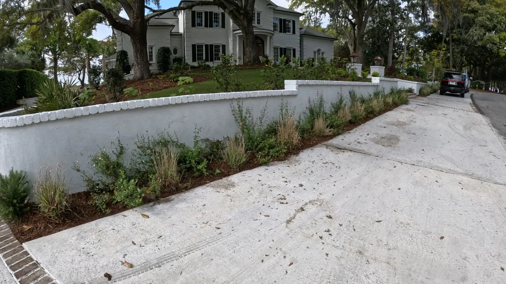
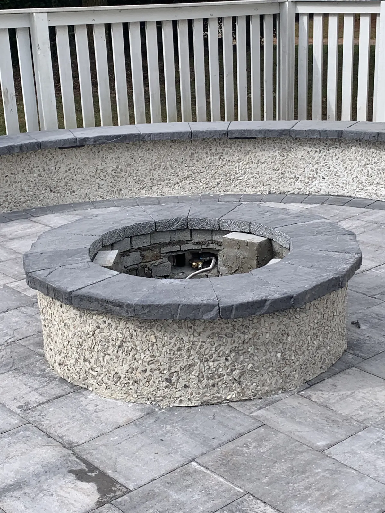

Drainage Solutions & Grading for Charleston Properties: A Complete Guide
Standing water in the yard after rain. Wet spots that never dry out. Erosion cutting channels through mulched beds. Water pooling against the foundation. These are not minor inconveniences — they are signs that your property's drainage is not working correctly, and in Charleston, where the combination of heavy rainfall, clay soils, low elevation, and a high water table creates some of the most challenging drainage conditions in the Southeast, those signs are worth taking seriously.
Water that doesn't drain properly causes compounding problems: saturated soil that kills plant roots, foundation moisture that eventually works its way into the structure, erosion that removes topsoil and undermines landscape features, and standing water that becomes a mosquito breeding ground during Charleston's long, warm season.
The good news is that most drainage problems are solvable. The solutions range from simple grading corrections to comprehensive drainage systems, and the right approach depends on a thorough assessment of how water currently moves across your property and where the problem originates.
At Cramers Landscaping, we provide landscape drainage and grading services throughout Charleston and the Lowcountry. This guide explains the most common drainage problems in Charleston, the solutions available, and how to approach a drainage project that actually fixes the problem rather than just moving it.
Why Drainage Is Especially Challenging in Charleston

Charleston's geography creates a uniquely demanding drainage environment:
High annual rainfall. Charleston receives approximately 52 inches of rain annually — significantly above the national average. Summer thunderstorms can drop 2 to 3 inches of rain in an hour, which overwhelms even well-designed drainage systems if they are not sized appropriately.
Low elevation and high water table. Much of the Charleston area sits at low elevation, and the water table — the level at which saturated soil begins — is often only a few feet below the surface. This limits how much water the soil can absorb before it saturates completely and water begins to stand.
Clay soils. Inland Charleston County has significant clay content in the soil profile. Clay absorbs water slowly and drains even more slowly. Once saturated, clay soil stays wet for extended periods. Water doesn't percolate down through clay — it pools on top or moves sideways along the clay layer.
Tidal and coastal influences. Coastal and near-coastal properties deal with tidal influences that affect drainage during high-tide events, particularly during storms. Properties near tidal creeks may experience periodic inundation regardless of onsite drainage infrastructure.
Development-related drainage alterations. New development in surrounding areas changes how water moves at the watershed level. Impervious surfaces from roads, rooftops, and paved areas increase runoff volume significantly. Properties that drained adequately 20 years ago may have drainage problems today because upstream development has increased the water load reaching the property.
Diagnosing Drainage Problems: Where to Start
Before specifying a solution, we assess how water moves across the property during and after a rain event. This involves understanding:
The source of the water. Is the problem water originating on the property (from the roof, from a sloped lot, from a specific low spot), water coming in from adjacent properties, or both?
The soil conditions. Sandy soils drain fast and rarely hold water. Clay soils hold water and create saturation issues. Most Charleston properties have some mix of both, and the distribution matters for the drainage design.
The current grade. Proper drainage requires positive grade — the ground should slope away from structures, with water flowing toward collection points, swales, or drainage outlets. A flat yard or one that slopes toward the house is a drainage problem by design. The assessment maps existing grade and identifies where positive drainage flow is absent.
The outlet options. Drainage systems need somewhere to send the water — a storm drain connection, a drainage ditch, a natural feature like a creek or pond, or a dry well that disperses water underground. Understanding outlet options shapes the drainage design.
Drainage Solutions: The Options

Regrading
The most fundamental drainage solution is correcting the grade. If water pools against a foundation, the ground adjacent to the foundation needs to slope away from it — a minimum of 6 inches of drop over the first 10 feet from the structure is a standard reference. If water pools in a low spot in the yard, the grade around that spot may need to be raised so water flows to a designated drainage outlet instead.
Regrading involves moving soil — either adding topsoil and compacting to raise a low area, or shaving high areas to redirect flow. It is often the right first step before installing other drainage infrastructure, because a properly graded site reduces the volume of water that any drainage system needs to handle.
French Drains
A French drain is a subsurface drainage system consisting of a perforated pipe buried in a gravel-filled trench, covered with filter fabric to prevent soil intrusion. It captures subsurface water — water moving laterally through the soil — and channelizes it to a collection point or outlet.
French drains are the right solution when subsurface water is the primary problem: saturated soil that stays wet after rain even when the surface drains, wet areas that appear in the yard without an obvious surface water source, or water infiltrating a crawl space or basement foundation.
French drains are typically installed 18 to 36 inches deep, depending on where the saturated soil zone is located. The pipe outlet should connect to a storm drain, drainage ditch, or other legal discharge point.
Surface Drainage Channels and Swales
A drainage swale is a shallow, gently sloped channel that collects and conveys surface water. Properly designed swales are graded to a specific slope, sized for the volume of water they need to handle, and either vegetated or lined with sod to prevent erosion.
Swales are the most cost-effective way to move large volumes of surface water across a property. They are appropriate where the surface drainage volume is too high for subsurface systems alone, or where the topography naturally directs water through a specific corridor.
In residential landscapes, swales are often integrated into the lawn grade or edge of the property in a way that functions effectively without being visually intrusive. A well-graded swale can be invisible in the landscape when it's working as intended.
Catch Basins and Area Drains
A catch basin is a surface-level drain inlet — typically a square grate at grade level — that collects surface water and directs it into a subsurface pipe system. Catch basins are the right solution for collecting water at low spots, at the base of downspout extensions, or at locations where surface water concentrates and cannot be redirected by grading.
Multiple catch basins can be connected in a single drainage system that routes all collected water to a single outlet point. This approach is common for larger properties with multiple low areas or for driveways and patio areas where surface drainage needs to be managed.
Dry Creek Beds
A dry creek bed is a decorative drainage channel that uses river rock or fieldstone to create a naturalistic drainage corridor. It functions as a surface drainage swale while adding visual interest to the landscape — the rock-lined channel reads as a garden feature rather than a drainage utility.
Dry creek beds work well along natural grade transitions, along the edge of a property where water flow occurs during rain, or as a connecting feature between two drainage areas. They are most appropriate in landscapes with naturalistic or informal design character.
Downspout Management
Concentrated water discharge from roof downspouts is a frequent source of localized drainage problems. A downspout that discharges directly against the foundation, onto a paved surface, or into a low area creates a drainage load at a single point that the surrounding area can't absorb.
Downspout extensions, underground pop-up emitters, and connections to the subsurface drainage system address concentrated downspout discharge. This is one of the simplest and most cost-effective drainage improvements and often a component of larger drainage projects.
Grading and Drainage for Retaining Walls
Retaining walls introduce specific drainage requirements — water retained behind a wall builds hydrostatic pressure that can compromise the structure. Every retaining wall we build includes drainage infrastructure behind it (gravel backfill, perforated drain pipe, weep holes) as a standard component of the installation. See our retaining wall guide for full detail.
What Drainage Work Costs in Charleston
Drainage project pricing varies enormously based on the scope and complexity of the problem. General ranges:
Simple regrading (small area, soil correction only): $500 to $2,500
French drain installation (50 to 100 linear feet): $2,500 to $6,000
Catch basin and surface drain system: $1,500 to $5,000 depending on number of inlets and pipe runs
Comprehensive drainage project (multiple drainage types, significant regrading, catch basins, French drains): $8,000 to $25,000+
The best way to scope and price a drainage project is an on-site assessment. Drainage problems look different from the surface than they do once the site conditions, soil profile, and water source are properly understood.
Choosing the Right Drainage Approach: A Decision Framework
The right drainage solution depends on the specific problem and site conditions. A simple framework:
Water pooling at the foundation: Start with regrading for positive drainage away from the structure. Add downspout management. Consider a French drain if subsurface saturation is contributing.
Wet area in the lawn that doesn't dry out: French drain targeting subsurface saturation. Assess whether the area is a natural low spot that needs regrading as well.
Water running across the surface from a neighboring property or uphill area: Surface swale or drainage channel to intercept and redirect incoming water.
Low spot at the base of a slope with chronic ponding: Catch basin with a pipe run to a drainage outlet. May be combined with regrading the surrounding area.
Multiple problem areas across a larger property: Comprehensive drainage design that addresses all areas in a coordinated system with a single or multiple outlet strategy.
Drainage FAQ for Charleston Homeowners
Does a drainage system require a permit in Charleston?
Most residential drainage improvements — regrading, French drains, catch basins — do not require permits for work entirely on private property. However, any drainage that connects to the public storm drain system or crosses a neighboring property requires coordination with the municipality. We confirm permit requirements before beginning any drainage project.
Can drainage work damage existing landscaping?
Drainage installation requires some excavation, which will disturb turf and plantings in the work area. We take care to protect established plants where possible and to restore the surface — including sod repair — after installation. Clients should plan for some short-term disruption and full restoration within a few weeks of project completion.
How do I know if my yard drainage is affecting my foundation?
Signs include persistent moisture in a crawl space or basement, efflorescence (white mineral deposits) on foundation walls, and soft or saturated soil immediately adjacent to the foundation. A foundation inspector can assess whether moisture penetration has occurred, and we can assess the grading and drainage conditions that are contributing.
Can I do drainage improvements myself?
Simple downspout extensions and grading corrections in small areas are reasonable DIY projects. French drain installation requires a thorough understanding of how subsurface water moves and where the pipe can outlet, and mistakes are expensive to correct once the trench is backfilled. For anything beyond basic surface adjustments, a professional assessment before any work begins is worth the investment.
How long does a drainage installation take?
Most residential drainage projects take one to three days. Larger comprehensive projects with significant regrading and multiple drainage system components may take longer. We provide a timeline as part of the project proposal.
Ready to solve your Charleston property's drainage problems for good?
Contact Cramers Landscaping for a free drainage assessment. We'll walk your property, identify the source of the problem, and recommend a solution that addresses it properly. Call (843) 614-9773.
Planning a Project of Your Own?
See everything we design and build, or get in touch to talk through your ideas with Doug and Zach.